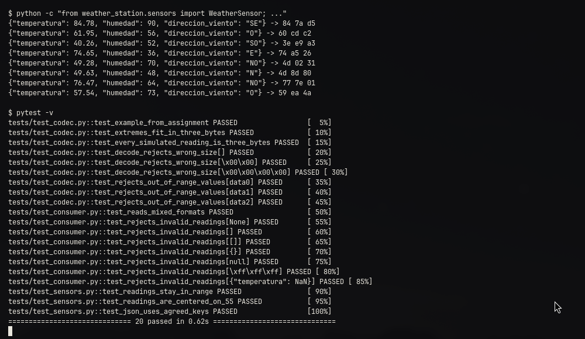
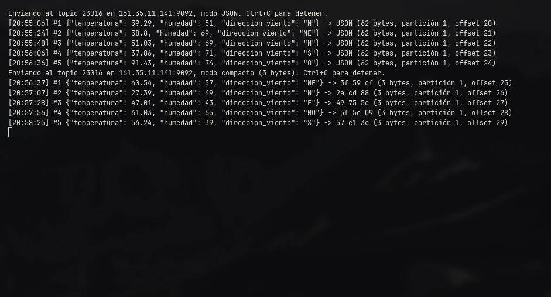
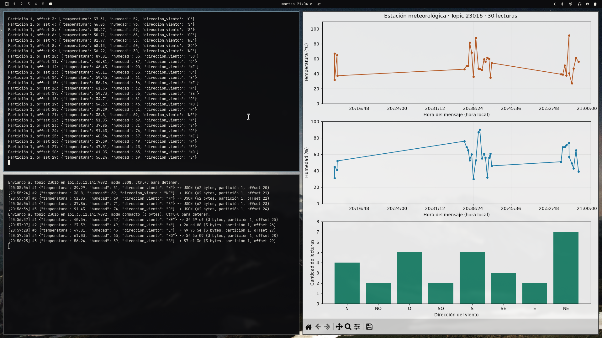
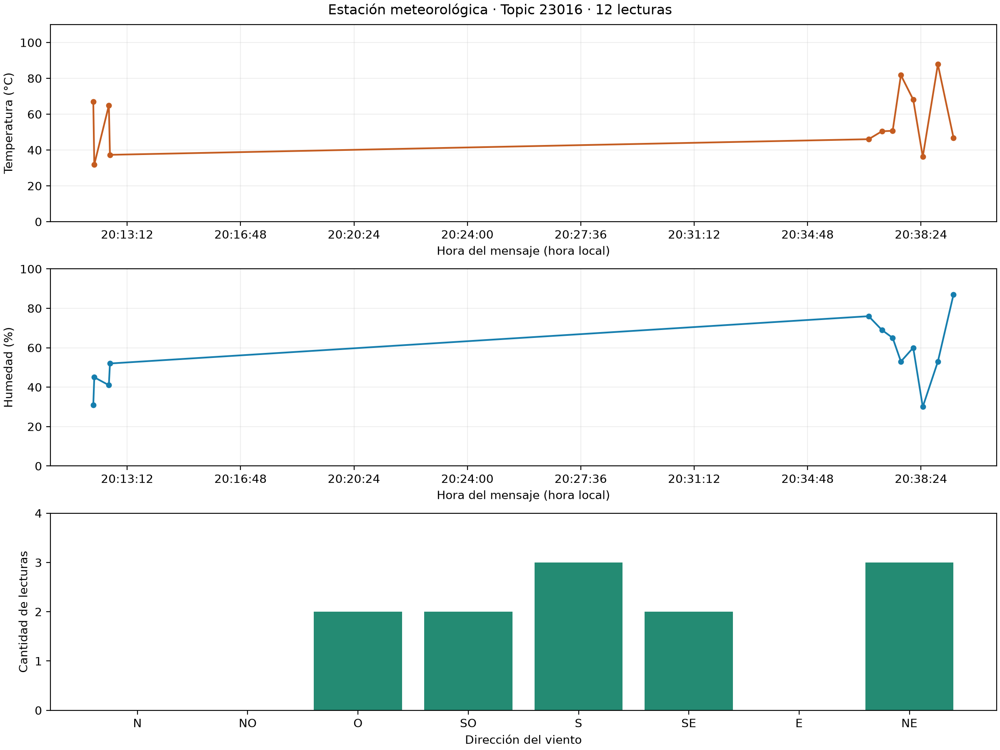
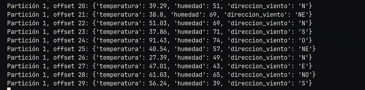
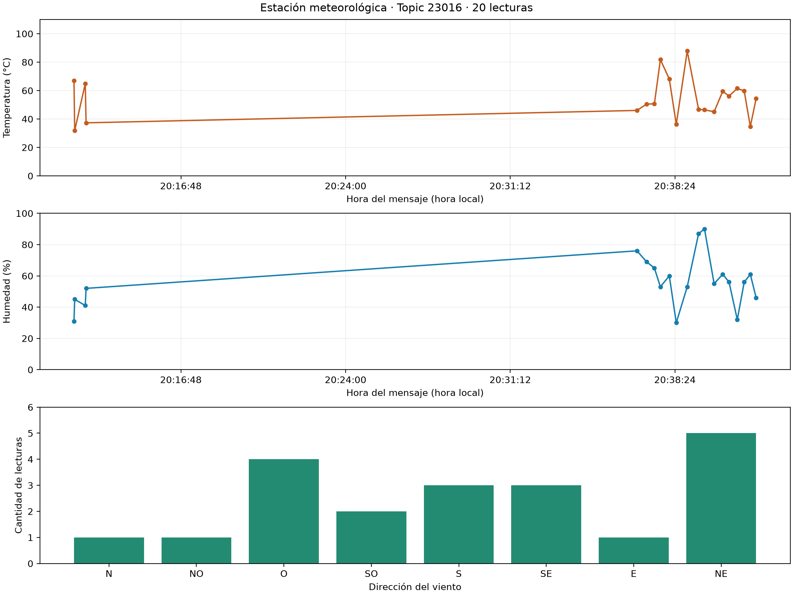

Simulamos un nodo con tres sensores, mandamos su telemetría a un broker Kafka en el Edge y la graficamos en vivo. Después metimos cada lectura en 3 bytes.
Esteban Cárcamo · 23016
Felipe Aguilar · 23195
12 de noviembre de 2026 · github.com/ecarcamo/IoT-Estacion-Meteorologica
23016kafka-python. Como topic usamos el carné de Esteban..env que no subimos al repositorio.| Sensor | Cómo lo generamos | Rango y tipo |
|---|---|---|
| Temperatura | Normal con μ = 55 y σ = 15 | 0 a 110 °C, dos decimales |
| Humedad relativa | La misma normal, redondeada | 0 a 100 %, entero |
| Dirección del viento | Uniforme entre las 8 opciones | N, NO, O, SO, S, SE, E, NE |
La varianza quedaba a nuestro criterio y escogimos σ = 15 (varianza 225). Con eso casi todo cae entre 10 y 100 (μ ± 3σ), así que el recorte a los límites del sensor casi nunca entra en juego, y aun así la gráfica sube y baja lo suficiente para que se note.
Cada lectura sale como JSON:
{"temperatura": 56.32, "humedad": 51, "direccion_viento": "SO"}
Lecturas sacadas de WeatherSensor, cada una con su versión de 3 bytes a la derecha. Abajo corren las 20 pruebas de pytest que revisan rangos, codificación y decodificación.

A la capa 6, presentación. JSON no abre conexiones ni mueve paquetes; lo único que define es cómo se escriben los datos (llaves, tipos, texto en UTF‑8) para que nuestro productor en Python y cualquier consumidor, en el lenguaje que sea, los lean igual. Esa traducción a un formato común es el trabajo de la capa de presentación. SOAP es más mixto: su XML es representación, pero como protocolo de mensajes sobre HTTP también se suele ubicar en aplicación (capa 7).
Lo notamos al depurar: en la terminal se lee directo qué mandó el sensor. Casi cualquier lenguaje lo trae incluido y se le pueden agregar campos sin romper a quien ya lo consume. El precio es el tamaño: una lectura nuestra pesa 62 o 63 bytes en JSON, contra 3 en el formato compacto.
producer.py se conecta a 161.35.11.141:9092 con SASL_PLAINTEXT y PLAIN, y publica en el topic 23016. Entre una lectura y otra espera un tiempo al azar de 15 a 30 s, y sigue así hasta que alguien lo detiene con Ctrl+C.
producer = KafkaProducer(**settings.client_options(), acks="all")
while args.count == 0 or sent < args.count:
payload = encode_reading(sensor.read(), args.compact)
metadata = producer.send(topic, key=b"sensor1", value=payload).get(timeout=30)
time.sleep(random.uniform(15, 30))
acks="all" y el .get(), cada envío espera la confirmación del broker. Por eso podemos imprimir la partición y el offset de cada mensaje.sensor1, así que caen en la misma partición y no se desordenan.Corrida del 10 de noviembre. Primero cinco lecturas en JSON (python producer.py) y luego cinco en 3 bytes (--compact). Por la hora de cada línea se ve que entre envíos pasan de 15 a 30 s, y al final de cada una está la partición y el offset que devolvió Kafka.

consumer.py se suscribe al topic 23016 con las mismas credenciales. Con cada mensaje que llega: lo decodifica (JSON o 3 bytes), revisa que los valores estén dentro de rango y lo agrega a la gráfica. Si algo viene mal, lo reporta en consola y lo salta.
La gráfica tiene tres paneles: temperatura y humedad contra la hora del mensaje, y cuántas veces ha salido cada dirección del viento. Se redibuja cada vez que entra un dato.
Un detalle práctico: si el programa se queda bloqueado esperando mensajes, la ventana de matplotlib se congela. Por eso usamos poll() con 100 ms de espera y plt.pause(), y la ventana sigue respondiendo entre lectura y lectura.
Con auto_offset_reset="earliest" también aparece lo que ya estaba en el topic, y --replay relee todo el historial sin mover los offsets del grupo.
Todo corriendo contra el broker real. Arriba a la izquierda está el consumidor y abajo el productor; los offsets de uno y otro coinciden, y la gráfica de la derecha crece con cada lectura.


Figura exportada por el consumidor con las lecturas JSON del topic 23016 (offsets 4 a 11 más lo que ya había).
Arriba la temperatura, en medio la humedad y abajo el conteo de direcciones del viento.
El tramo recto del inicio une unas lecturas de prueba de las 20:12 con la corrida de las 20:36, porque el eje X usa la hora real de cada mensaje.
--replay y ver lecturas de horas antes.La pista del enunciado: 214 = 16 384. La temperatura máxima es 110.00, y si le quitamos el punto queda 11 000, que es menor. O sea, la multiplicamos por 100, la guardamos como entero y no perdemos ningún decimal.
Ejemplo: 56.32 °C → 5632, 51 %, SO → 3
(5632 << 10) | (51 << 3) | 3 = 0x58019B → bytes 58 01 9B
def encode(data: dict) -> bytes:
temperature = round(data["temperatura"] * TEMPERATURE_SCALE)
humidity = data["humedad"]
wind = WIND_DIRECTIONS.index(data["direccion_viento"])
packed = (temperature << TEMPERATURE_SHIFT) | (humidity << HUMIDITY_SHIFT) | wind
return packed.to_bytes(PAYLOAD_SIZE, "big")
def decode(payload: bytes) -> dict:
packed = int.from_bytes(payload, "big")
return {
"temperatura": ((packed >> TEMPERATURE_SHIFT) & TEMPERATURE_MASK) / TEMPERATURE_SCALE,
"humedad": (packed >> HUMIDITY_SHIFT) & HUMIDITY_MASK,
"direccion_viento": WIND_DIRECTIONS[packed & WIND_MASK],
}
Son los mismos corrimientos de la lámina anterior, de ida y de vuelta. Le quitamos aquí las validaciones para que quepa: en el código, encode rechaza valores fuera de rango, porque una humedad de 200 no cabe en 7 bits y se metería en los bits de la temperatura.
Los offsets 25 a 29 salieron del productor en 3 bytes y el consumidor los decodificó con los mismos valores. Por ejemplo, 40.54 °C, 57 % y NE viajó como 3f 59 cf.


Las lecturas compactas (offsets 12 a 19) se grafican junto al historial JSON, en el mismo topic y con el mismo consumidor.
El offset 12, por ejemplo, llegó como 48 8E D7 y se dibujó como 46.43 °C, 90 % y NE.
Desde la gráfica no se nota qué formato traía cada punto, que era justo la idea.
La principal es que el mensaje deja de explicarse solo. 48 8E D7 no dice nada si no se sabe qué bits son de qué campo. Productor y consumidor tienen que usar exactamente el mismo esquema, y si uno cambia (otro orden, otro rango) hay que actualizar los dos a la vez.
Tampoco queda espacio para nada más: ni id del sensor, ni timestamp, ni versión del formato, ni checksum. Si un bit se voltea en el camino, llega otro valor y nadie se da cuenta.
Y hay que validar antes de codificar, porque un valor fuera de rango no da error al empaquetarse: se desborda hacia el campo de al lado.
Guardándola como entero en centésimas (punto fijo). 110.00 × 100 = 11 000, y en 14 bits caben hasta 16 383, así que entra todo el rango con sus dos decimales. Al recibir se divide entre 100. No hace falta un float de 4 bytes porque ya conocemos el rango y la precisión.
La humedad pasaría de 101 valores posibles a 1 001 (de 0.0 a 100.0, o sea 0 a 1000 en décimas), y eso pide 10 bits. Sumando: 14 + 10 + 3 = 27 bits, y solo tenemos 24. Algo hay que sacrificar:
| Opción | Bits | Qué perdemos |
|---|---|---|
| Temperatura con un decimal (0 a 1100) | 11 + 10 + 3 = 24 | la centésima de grado |
| Dejar la humedad entera | 14 + 7 + 3 = 24 | el decimal nuevo de humedad |
| Alternar mensajes de temperatura y de humedad | 3 bytes cada uno | la mitad de lecturas por variable |
| Pedir un payload de 4 bytes | 32 | ya no cumple la restricción |
Nosotros escogeríamos la primera. Para una estación meteorológica, un decimal de temperatura sobra; la segunda cifra decimal es más ruido del sensor que información.
compression.type (gzip, snappy, lz4, zstd) junto con batch.size y linger.ms: en lugar de mandar cada lectura sola, se juntan varias y se comprimen. Se gana espacio y se pierde inmediatez.sensor1 pesa 7 bytes, más del doble que el payload. Una key de un byte, o ninguna, ahorra eso; sin key se pierde el orden garantizado por sensor.max.request.size y message.max.bytes para ponerle techo al tamaño de los mensajes.Siendo honestos, el protocolo de Kafka agrega decenas de bytes de encabezado a cada mensaje. En un enlace LoRa real el sensor no hablaría Kafka: mandaría sus 3 bytes por radio a un gateway, y ese gateway (o Kafka Connect) los publicaría en el broker.
Referencias: documentación de Apache Kafka (kafka.apache.org/documentation) · kafka-python (kafka-python.readthedocs.io) · enunciado del laboratorio, CC3067.